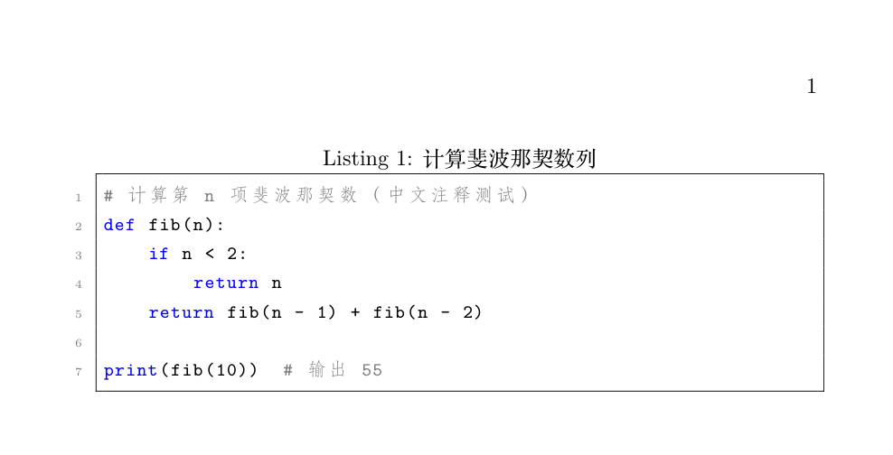

LaTeX 常用マクロパッケージとテクニック
これまでの章で使ったマクロパッケージもかなり多いので、この記事で体系的にまとめます：マクロパッケージの早見表、自作コマンド、コード整形、複数ファイル構成、latexmk とエラー対処の心構え。
これら「ツールボックス」の内容を身につければ、LaTeX を書ける段階から LaTeX プロジェクトを管理できる段階へと進化します。
常用マクロパッケージ早見表
マクロパッケージは \usepackage[オプション]{パッケージ名} で読み込み、すべてプリアンブルに置きます。
| マクロパッケージ | 用途 | 本シリーズで登場 |
|---|---|---|
| geometry | ページ余白と用紙 | LaTeX 文書構造とレイアウト |
| fancyhdr | ヘッダーとフッター | LaTeX 文書構造とレイアウト |
| amsmath / amssymb | 数式機能の拡張 / 追加記号 | LaTeX 数式の基礎、LaTeX 数式の応用 |
| graphicx | 図の挿入 | LaTeX 図と表 |
| booktabs / multirow | 三線表 / 縦方向のセル結合 | LaTeX 図と表 |
| enumitem | リストのカスタマイズ | LaTeX 文字書式とリスト |
| xcolor | 色の定義 | 本節で紹介 |
| listings | コード整形 | 本節で紹介 |
| hyperref | ハイパーリンクとしおり | LaTeX 相互参照と参考文献管理 |
| biblatex | 参考文献（現代的な方法） | LaTeX 相互参照と参考文献管理 |
| float | 図表の強制配置 [H] | LaTeX 図と表 |
ローカル環境で File 'xxx.sty' not found と表示されたら、tlmgr install xxx でインストールします（TeX Live）。MiKTeX は自動でダウンロードします。Overleaf にはほぼすべてのマクロパッケージが最初から入っているので、この心配はありません。
自作コマンド：\newcommand
同じ内容を3回以上書いたら、コマンドを定義すべきです。\newcommand{\コマンド名}[引数の数]{定義}
{...}$ で x_1, …, x_5 を得る
\newcommand{\R}{\mathbb{R}} % 今後 $\R$ と書けば $\mathbb{R}$ になる
% 引数1つ：固定フォーマットをカプセル化
\newcommand{\email}[1]{\texttt{#1}} % #1 は最初の引数を表す
% デフォルト値付きの省略可能引数：[引数の数][デフォルト値]
\newcommand{\vecn}[2][n]{x_1, \dots, x_#1}
% 使い方：$\vecn{...}$ で x_1, …, x_n を得る
% $\vecn
\begin{document}
上で定義$\R$上の関数、ベクトル$\vecn$ 与 $\vecn[5]$，
連絡先メールアドレス\email{service@runoob.com}。
\end{document}
| コマンド | 用途 | 注意 |
|---|---|---|
| \newcommand | 新コマンドの定義 | コマンド名が既存のコマンドと衝突してはいけない |
| \renewcommand | 既存コマンドの再定義 | デフォルトスタイルを変更するときに使う。基本コマンドの変更は慎重に |
| \newenvironment | 新環境の定義 | 構文は上と同じ。開始コードと終了コードを指定する |
自作環境の構文も一緒に覚えておきましょう：
例：自作「注意」環境
{\par\medskip\noindent\textbf{注意：}\itshape} % 開始コード
{\par\medskip} % 終了コード
\begin{note}
ここの中身は自動的に「注意：」で始まり、斜体で表示されます。
\end{note}
コード整形：listings マクロパッケージ
技術文書にコードを載せるなら、listings マクロパッケージを使います。言語ハイライト、行番号、枠線がすべて自動です。
例：ハイライトと行番号付きコードブロック
\usepackage{listings} % コード整形マクロパッケージ
\usepackage{xcolor} % 色サポート
\lstset{ % コード全体のスタイル設定
basicstyle=\ttfamily\small, % 等幅フォント、少し小さい文字サイズ
keywordstyle=\color{blue}, % キーワードは青
commentstyle=\color{gray}, % コメントはグレー
stringstyle=\color{purple}, % 文字列は紫
numbers=left, % 行番号は左側
numberstyle=\tiny\color{gray},
showstringspaces=false, % 文字列内の空白マークを表示しない
frame=single % 単線の枠線
}
\begin{document}
\begin{lstlisting}[language=Python, caption=フィボナッチ数列の計算]
# 第 n 項フィボナッチ数を計算（日本語コメントのテスト）
def fib(n):
if n < 2:
return n
return fib(n - 1) + fib(n - 2)
print(fib(10)) # 55 を出力
\end{lstlisting}
\end{document}

lstlisting は「そのまま表示する環境」です。内部の内容は一切 LaTeX として解釈されず、& や % をエスケープする必要がありません。caption にも自動で番号が付きます（Listing 1）。よく使う言語名は Python、C、Java、HTML、SQL、bash などです。language を指定しない場合はプレーンテキストとして着色されます。
listings の UTF-8 日本語サポートはコンパイラに依存します。XeLaTeX では日本語コメントは正常に表示されますが、古いエンジン（latex/pdfLaTeX）では文字化けします。日本語の文書では必ず XeLaTeX でコンパイルしてください。
複数ファイル構成：\input と \include
文書が数百行を超えたらファイルを分割すべきです。main.tex は骨組みだけにして、内容は分割して管理します。
例：main.tex の骨組み
\usepackage{amsmath, graphicx, booktabs, hyperref}
\begin{document}
\input{chapters/intro} % 序論（ファイル名に .tex は付けない）
\input{chapters/method} % 方法
\input{chapters/experiment} % 実験
\input{chapters/conclusion} % 結論
\bibliographystyle{plain}
\bibliography{refs}
\end{document}
2つのコマンドは似ていますが、動作には明確な役割分担があります。
| 比較項目 | \input{ファイル} | \include{ファイル} |
|---|---|---|
| ネストできるか | できる（子ファイル内でさらに \input） | できない |
| 改ページを強制するか | 改ページしない | 各ファイルの前に \clearpage を強制 |
| includeonly との併用 | 非対応 | 対応。指定した章だけをコンパイル（高速化に便利） |
| 適用できる粒度 | 任意の断片（マクロ定義、図表、表紙） | 章レベルの大きな内容 |
よくある落とし穴：\include は改ページを強制するので、それを使って「同じページ内の複数の小節」をまとめると、意図しない改ページが発生します。小さな断片はすべて \input を使いましょう。
latexmk：ワンクリックコンパイル
第9回の4回コンパイル手順を手動で4回入力するのは面倒ですが、latexmk がすべて自動で処理します。
$ latexmk -xelatex main.tex # XeLaTeX 引擎编译，自动跑满所有遍数 $ latexmk -xelatex -c main.tex # 清理中间文件（保留 PDF） $ latexmk -xelatex -C main.tex # 连 PDF 一起清理
latexmk は自動的に判断します：.bib があれば bibtex を実行し、目次や参照に変更があればすべての番号が安定するまで何度かコンパイルします。エディタの「ビルドコマンド」に latexmk を設定するのが、ローカル環境でのベストプラクティスです。
エラー対処の心構え
LaTeX のエラーメッセージは感嘆符で始まり、行番号が付いています。形式は固定なので、最初の数行を読めば十分です。
! Undefined control sequence.
l.42 \secton{方法}
l.42 はエラーが発生した行番号を示します。この例では42行目で \section を \secton と打ち間違えています。ここを修正すれば、後続の連鎖的なエラーもたいてい一緒に消えます。
| エラーメッセージ | 意味 | 対処 |
|---|---|---|
| Undefined control sequence | コマンドが存在しない：スペルミスかマクロパッケージ不足 | 行番号を確認してスペルをチェック；マクロパッケージが読み込まれているか確認 |
| Missing $ inserted | 数式コマンドがテキストモードで使われている | _ ^ \alpha などを $ の中に入れる |
| File 'xxx' not found | ファイルまたはマクロパッケージが見つからない | パスを確認；tlmgr install xxx |
| Runaway argument | 環境が閉じていない（\end が足りない） | 行番号を確認して \end{...} を補う |
| LaTeX Error: Environment xxx undefined | 未定義の環境を使っている | 環境のスペルとマクロパッケージを確認 |
| ! Emergency stop | コンパイルが完全に停止 | ログをさかのぼって最初のエラーを見つける |
| Reference undefined（警告） | 参照が ?? になる | もう一度コンパイルする |
常にログの最初のエラーだけを修正しましょう。後のエラーは最初のエラーの連鎖反応であることが多いです。修正したら再コンパイルする方が、一度に10か所直すよりずっと確実です。
まとめ
| ニーズ | 解決策 |
|---|---|
| 重複入力を減らす | \newcommand でコマンドと環境を定義 |
| コードを貼り付ける | listings + \lstset で全体スタイルを設定 |
| 大ドキュメント分割 | \input（フラグメント）/\include（章レベル） |
| ワンクリックコンパイル | latexmk -xelatex |
| デバッグ | ログの最初の ! エラーの行番号を読む |
クリックしてノートを共有
<p style="font-size:14px;">ノートは本記事の内容を拡張したものである必要があります！</p><br> <p style="font-size:12px;"><a href="../tougao.html" target="_blank">記事投稿は、こちらをクリック</a></p> <p style="font-size:14px;"><a href="../w3cnote/runoob-user-test-intro.html" target="_blank">登録招待コードの取得方法</a></p> <h3 class="text-muted"><i class="fa fa-info-circle" aria-hidden="true"></i> ノートを共有する前に<a href=";.html" class="runoob-pop">ログイン</a>が必要です！</h3> <p><a href="../w3cnote/runoob-user-test-intro.html" target="_blank">登録招待コードの取得方法</a></p>